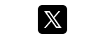

Computer code sign & symbol names exercise part 2
In this second part of 'Computer code sign/symbol names', we will continue to look at the names of more signs and symbols that are commonly used in both computer code and information technology.
Click here to go to the first part of this exercise on 'Computer code sign/symbol names'
Exercise: Code sign/symbol names
In the following conversation between two work colleagues, Juan continues to ask Peter what the names are of different signs and symbols used in computer code. The names of the signs and symbols are in bold.
Focus on the names of these different signs and symbols and then do the quiz at the end to check that you both understand their meaning and remember them.
Juan:'There's another symbol that I use all the time, but I don't know what it's called. It's written like this ' ! '.'
Peter:'The sign ' ! ' is called an exclamation mark.'
Juan:'Also, is this ' " ' called a speech mark?'
Peter:'Yes, it can be. ' " ' is more commonly called a quotation mark. There are two types of quotation marks. ' " ' is called a double quotation mark because it has two lines. Where a quotation mark has one line, like this ' ' ', it is called a single quotation mark.'
Juan:'I thought that ' ' ' was called an apostrophe?'
Peter:'It is also called an apostrophe. When the symbol is used in writing to show possession of something (e.g. 'this is John's car') or a contraction of two words into one (e.g. it is, is normally contracted into it's), it is called an apostrophe. But when there are two of them and they are used to close a selection of text or calculation (e.g. 'I like cheese'), then they are called single quotation marks.'
Juan:'That makes sense. Is this ' , ' called a comma?'
Peter:'That's right.'
Juan:'And this symbol ' & '. I have heard people call it 'and'. Is that its name?'
Peter:'People often call it the 'and symbol/sign', but the actual name for ' & ' is an ampersand.'
Juan:'And what about this ' : '?'
Peter:'The ' : ' symbol is called a colon. There is also a similar symbol that instead of having two dots has one dot and a comma below it. It is called a semicolon.'
Juan:'So, a semicolon is written like this ' ; '?'
Peter:'That's right. Another symbol that is sometimes used in computer code, is called the pipe or vertical bar. It is a vertical line and is written like this ' | '.'
Juan:'There are two other symbols which I'd just like to check if I am calling them the right names. This ' $ ' is called the dollar sign, isn't it?'
Peter:'Yes, it is.'
Juan:'And this ' % ' is called percent?'
Peter:'It can be, but ' % ' is normally called the percent sign.'
Juan:'I know that this isn't a sign or symbol, but when there is a gap between two words or numbers with nothing in it, like ' '. What is it called?'
Peter:'Where there is a blank space between words or numbers like this ' ', it is called a space.'
Quiz:
Below you will find the names (which are in bold) of each of the above signs & symbols which we have looked at in the above text. Now choose the sign/symbol from the question's selection box which you believe is the correct sign/symbol for the name. Only use one sign/symbol once. Click on the "Check" button at the bottom of the quiz to check your answers.
When the answer is correct, two icons will appear below the answer. The "" icon contains extra information on the word/phrase. In the "" icon, you can listen to the pronunciation of the word/phrase.
1. The sign/symbol that is called a Colon, is


|
Colon: |
|
Colon: |
| Close |
2. The sign/symbol that is called a Space, is


|
Space: |
|
Space: |
| Close |
3. The sign/symbol that is called a Quotation mark, is


|
Quotation mark: |
|
Quotation mark: |
| Close |
4. The sign/symbol that is called a Percent sign, is


|
Percent sign: |
|
Percent sign: |
| Close |
5. The sign/symbol that is called an Exclamation mark, is


|
Exclamation mark: |
|
Exclamation mark: |
| Close |
6. The sign/symbol that is called a Dollar sign, is


|
Dollar sign: |
|
Dollar sign: |
| Close |
7. The sign/symbol that is called a Comma, is


|
Comma: |
|
Comma: |
| Close |
8. The sign/symbol that is called an Apostrophe, is


|
Apostrophe: |
|
Apostrophe: |
| Close |
9. The sign/symbol that is called an Pipe, is


|
Pipe: |
|
Pipe: |
| Close |
10. The sign/symbol that is called a Semicolon, is


|
Semicolon: |
|
Semicolon: |
| Close |
11. The sign/symbol that is called an Ampersand, is


|
Ampersand: |
|
Ampersand: |
| Close |
Practice
Now that you understand the meaning of the words/phrases and when to use them, practise using them by creating your own sentences with them in English. Also click on the "" icon under each correct answer and listen how each is pronounced correctly.
Follow us on
